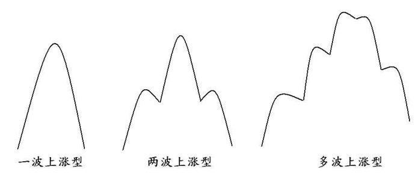

第194篇•教你炒股系列50:主升浪的形态（1）
谷为陵
我在前面谈了主升浪的成因，其中，着重谈了资金推动型主升浪，而对于因股票价值成长而形成的主升浪，则谈得很少，只是一带而过。这并非因股票价值成长而形成的主升浪不重要，恰恰相反，其重要程度是应该超过资金推动型主升浪的，但由于其内容太多，若停下来细谈，那么，《教你炒股系列》的进度就会很慢，所以，为了加快进度，只得将这部分内容留待以后慢慢再补充了。
这几天恰逢股市大跌，且股市还有继续下跌的态势，在现在股民们亏损累累的时候，大谈主升浪，似乎有点不合时宜。但我却不这样看，我认为在大熊市时，更应该好好学习和总结一下选大牛股和抓主升浪的知识和方法，我的理由如下：
第一，股民们为什么会亏损累累？我认为有三个原因：一是不会挖掘牛股，这当然有很大一部分原因是因为股市长期下跌，导致市场的牛股、特别是长大期牛股数量很少，一般的投资者选中牛股的概率较低，但大多数人没有挖掘牛股的能力，也是事实；二是不会抓主升浪，对于有些投资者来说，即使偶然发现了牛股，但由于没有掌握抓主升浪的系统性的方法，最终没有很好地享受主升浪带来的收益；三是不会止损，经常在股票的主跌浪时捂住不动，这是投资者在熊市亏损越来越大的主要原因之一（另一个原因是在熊市里进行频繁短线交易）。
第二，对于那些还不想离开股市的“瘾君子”们，若还怀着日后在股市赚大钱的梦想，那么，除了能够在未来挖掘出一只只牛股，抓住一个个主升浪外，难道还有更好的赚钱之道吗？
我甚至可以说得极端一点，假若某人不会挖掘牛股，不会抓主升浪，那么，他就根本不应该进股市。这就如一个连枪都瞄不准的人，怎么能够拿枪上战场杀敌呢？我们都知道，一个合格的士兵是需要在军营里，甚至是要上军校进行长时间的专业培训的。但是，有多少炒股者在进入股市前，受到过比较正规、有效的训练呢？
有人会说，股票投资的内容纷繁复杂，浩如烟海，怎么学呀？大道至简。我认为股票投资培训的核心就是两点内容：一是选牛股，二是抓主升浪。其它所有的知识和方法都应该紧紧围绕着两点进行。要是明白了这个简单的道理，一切的学习就会立即脉络清晰，条理分明。当然，学习知识只是进入股市的第一步，更重要的学习过程，是自己的投资实践——理论与实际相结合的投资实践。非常重要的是，只有在正确理念指导下，实践才不会盲目，否则，将有可能误入歧途。
好了，言归正传，现在我们开始谈主升浪的形态问题。为了更好地阐述这个问题，我们必须对于主升浪再严格定义一下。
所谓主升浪，是指某只股票的股价在某一段时间内涨速最快、涨幅最大（涨幅达到100%以上）的一个阶段。一旦股价从该主升浪高点回落超过30%以上，那么，就可以认为该主升浪结束了。
这个定义，对于短期和中期主升浪来说，问题不大，但对于长期主升浪来说，问题就复杂了。很多长期大牛股的股价，往往会在某一段主升浪后出现较大幅度的回落，但其后股价又会重新顽强上涨，展开新一轮的主升浪。若从长期来看，这些长期大牛股的大主升浪，就是由一段段的小主升浪连接而成的，此所谓波浪理论中的“大浪套小浪”。
所以，为了方便讨论，化繁为简，我暂且回避长期主升浪的形态问题，在此只重点阐述短中期主升浪的形态问题。从短中期来看，主升浪大致有三种形态：
一是一波上涨型。是指主升浪一浪到顶，一气呵成，中间没有休整。
二是两波上涨型。是指主升浪分为两个明显的上涨阶段，在第一波主升行情结束后，股价往往会下跌或者横盘一段时间，其后，股价会继续上涨，展开第二波主升行情。
三是多波上涨型。指主升浪分为多个明显的上涨阶段，在每一波主升行情结束后，股价都会下跌或者横盘一段时间，其后，股价会继续上涨，展开三波或以上的主升行情。
主升浪的三种形态如下图所示：

下面，我们将对以上三种主升浪分别进行讨论。
（未完待续）